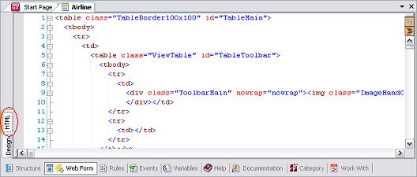

The purpose is to allow modifying the Web Forms of Transactions, Web Panels, Help and Documentation of each object.
This editor is of the WYSIWYG type, allowing the developer to visualize, in design, the web page that is to be published. An editor similar to Microsoft Front Page was licensed. As it was designed following the standard of Microsoft Office tools, users can work with it in a quick and intuitive way.
The editor facilitates formatting texts (font size, type, color, etc.) and allows inserting GeneXus controls (Controls edit, Grid, buttons, etc.). It also manages tables, a crucial feature in web page design.  View SourceThis option allows you to see the HTML source generated for the corresponding GeneXus object. Edit HTML SourceThis option allows adding or modifying the HTML source for the corresponding GeneXus object because this change is reflected in the object. Click again on the ‘Design’ vertical tab to return the web form. PropertiesThis option allows you to fiew the properties of the control that you are in. ActionsThe most common operations available for the controls in this editor are: Drag & Drop Form controls can be moved by Drag & Drop. It is also possible to move controls between forms. Undo/Redo Editing operations can be undone or redone. To do this you must select from the Edit/Undo/Redo options (or its respective icons) (This will undo the last operation performed). See also
Web Editor toolbars formatting
|